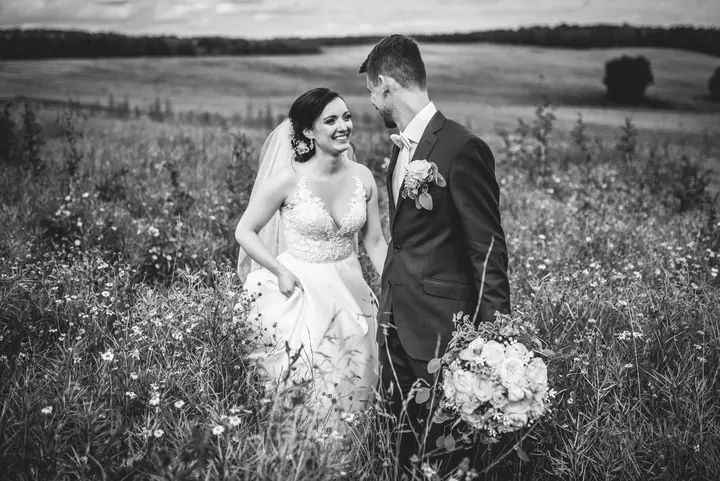

Svatby
Fotím celý den, od příprav a líčení přes obřad až po hostinu a večerní program, nebo jen obřad a portréty novomanželů. Vybrat si můžete ze tří balíčků a ke každému dostanete i tištěné fotky.

Svatební a firemní fotograf
Jmenuji se Daniel Dančevský a fotím svatby, firmy i portréty. Na svatbě se snažím zapadnout mezi hosty a fotit to, co se opravdu děje, od příprav až po večerní tanec.
Zeptat se na termín
Fotím celý den, od příprav a líčení přes obřad až po hostinu a večerní program, nebo jen obřad a portréty novomanželů. Vybrat si můžete ze tří balíčků a ke každému dostanete i tištěné fotky.
Nejvíc fotím svatby, často v Jizerských horách a v Krkonoších, ale i na zámcích a statcích po celých Čechách. Mám rád velké nebe nad loukou, ale stejně rád fotím smích u přípitku nebo tanec, který se trochu vymkne kontrole. Většinu svých fotek nechávám černobílých, protože v nich nejlíp vynikne to, co lidé zrovna prožívají.
Během dne se snažím, abyste mě skoro nevnímali. Hosté si často ani nevšimnou, že je fotím, a vy se můžete věnovat svatbě. Na párové focení si dopředu projedu místo a najdu, kde bude dobré světlo a hezký výhled. Spousta párů se toho focení bojí, a tak se snažím, aby u něj byla legrace.
Kromě svateb fotím pro firmy podklady na weby, sklady, výrobu i portréty zaměstnanců. Fotím taky interiéry, architekturu, produkty, jídlo a reportáže ze společenských akcí. Balíčky i zakázky se dají upravit podle toho, co potřebujete.

Napište mi datum a místo svatby a balíček, který vás zajímá. Ozvu se vám a domluvíme se.
Probereme, jak má den vypadat. Místo na párové focení si dopředu projedu, abychom měli kde fotit.
Fotím podle balíčku, jen obřad nebo celý den od příprav po večerní program. Většinu času se pohybuju mezi hosty a do ničeho vás netlačím.
Upravené fotky dostanete v plném rozlišení na USB flash disku (u nejmenšího balíčku na DVD) a k nim tištěné fotky 13×18 cm.
Balíček A s obřadem, skupinovou fotkou a portréty vyjde na 7 900 Kč, balíček B na 5 hodin na 15 900 Kč a celodenní balíček C na 21 900 Kč. Všechny se dají upravit, stačí mi napsat.
Podle balíčku nejméně 100, 250 nebo 400 upravených fotek v plném rozlišení a k tomu 30 až 50 tištěných fotek 13×18 cm. U balíčku C vám zdarma půjčím Instax Square.
Ano. Hodinové focení s 20 upravenými fotkami stojí 2 500 Kč. Je to dobrá příležitost poznat se před svatbou.
Ano. Firemní portréty fotím přímo u vás nebo v mobilním ateliéru, který přivezu. Cena se odvíjí od počtu lidí a fotek. Reportáž z akce stojí 1 600 Kč za první hodinu a 1 000 Kč za každou další započatou.